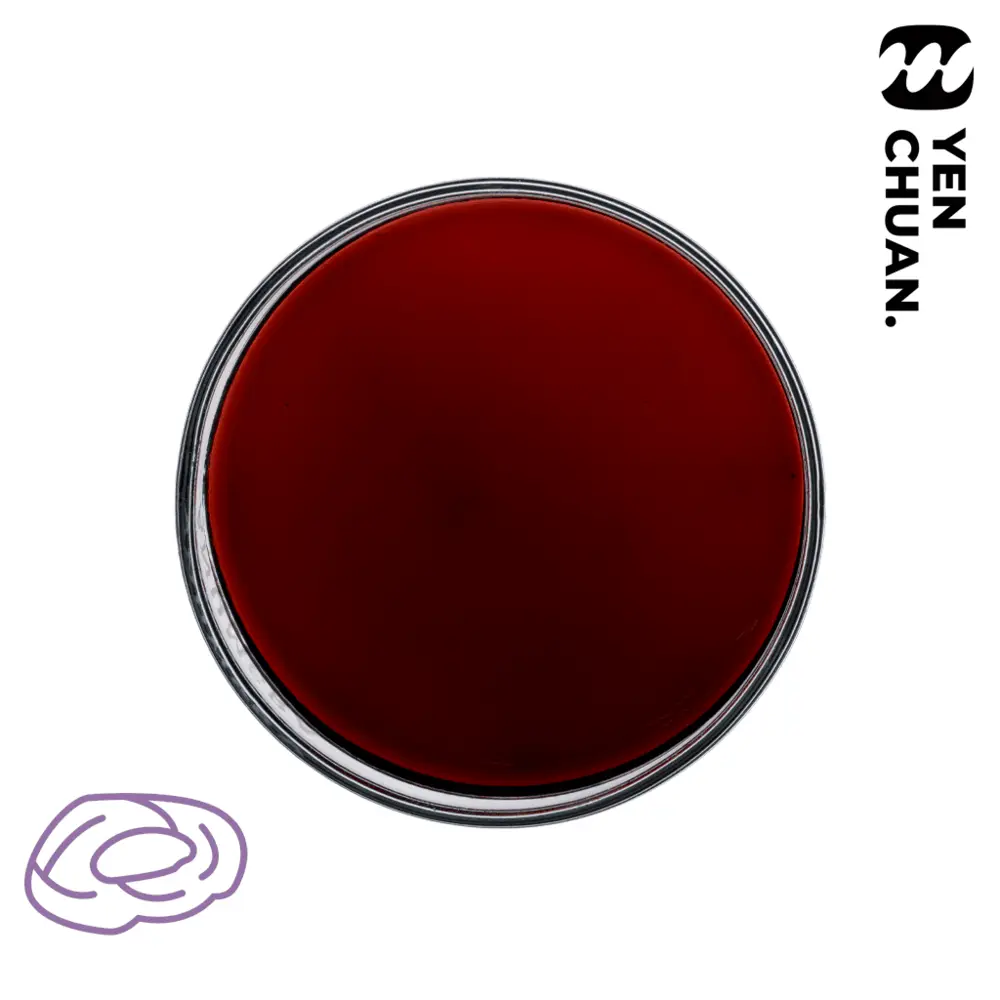

Smoked plum flavored syrup
SKU AZ95
Smoked plum is a snack popular in many Asian countries, it’s made from smoked, dried plums which lends it a salty, sour flavour.
Aside from using in cooking, smoked plum juice is also a popular refreshing drink during summer!
Cool yourself down with our smoked plum syrup!
Preview only: no inquiry is sent here. Wholesale prices, MOQ, lead time and shipping require confirmation by Yen Chuan.
Details
Unit size: 5kg
Units per carton: 4
Storage conditions: Room temperature
MOQ: 15 cartons
 Sakura syrup
Sakura syrup Cucumber syrup
Cucumber syrup Barbie syrup
Barbie syrup Passion fruit black tea flavored syrup
Passion fruit black tea flavored syrup